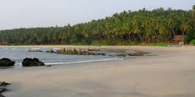
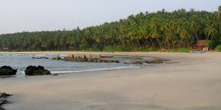

Kannur (pronounced [kɐɳːuːr] (listen)), formerly known in English as Cannanore, is a city and a municipal corporation in the state of Kerala, India. It is the administrative headquarters of the Kannur district and situated 274 kilometres (170 mi) north of the major port city and commercial hub Kochi and 137 kilometres (85 mi) south of the major port city and a commercial hub, Mangalore. During the period of British colonial rule in India, when Kannur was a part of the Malabar District (Madras Presidency), the city was known as Cannanore. Kannur is the sixth largest urban agglomeration in Kerala.[4] As of 2011 census, Kannur Municipal Corporation, the local body which administers mainland area of city, had a population of 232,486.
back